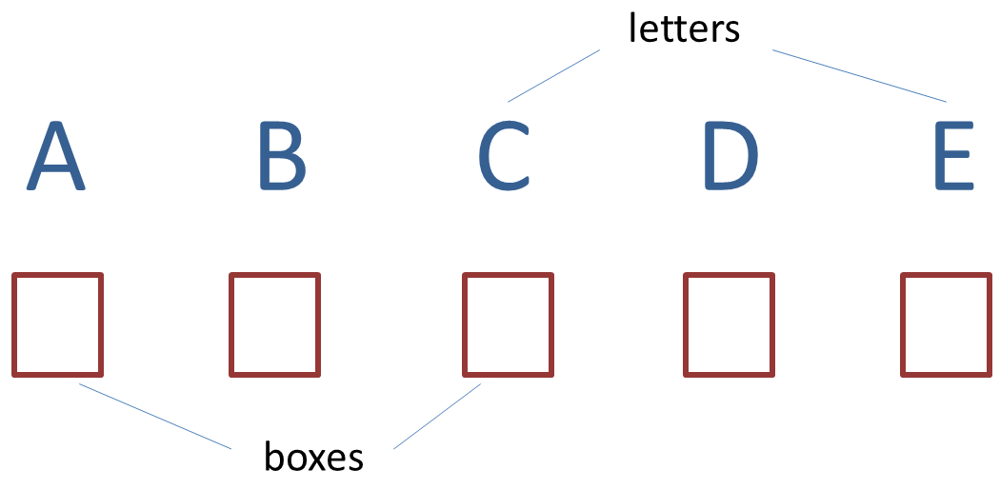
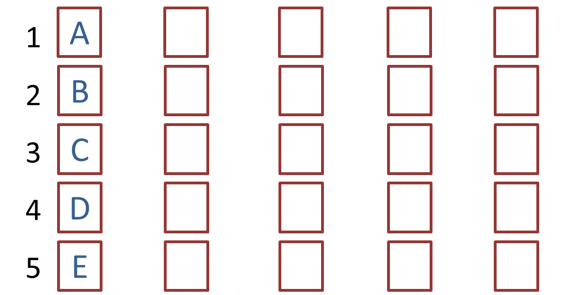
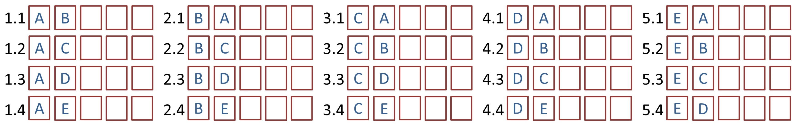
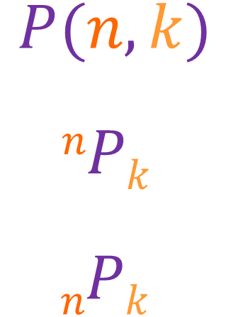
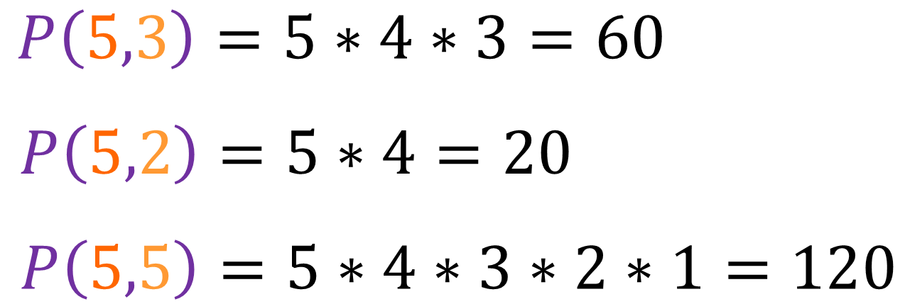
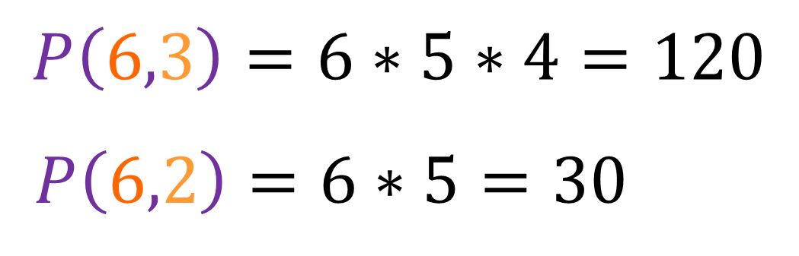
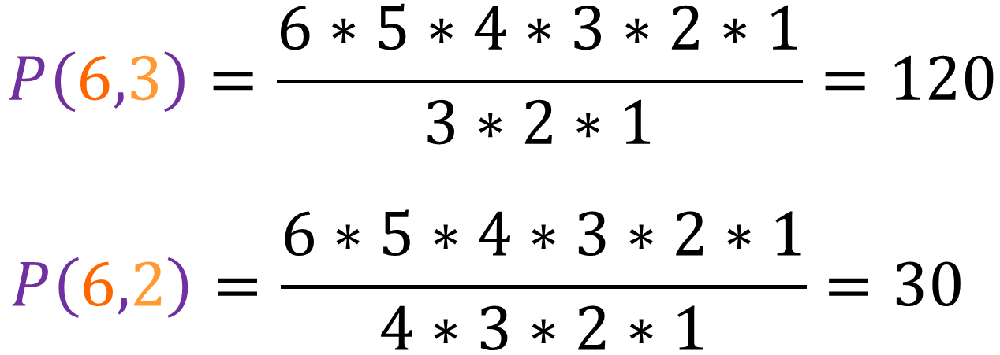
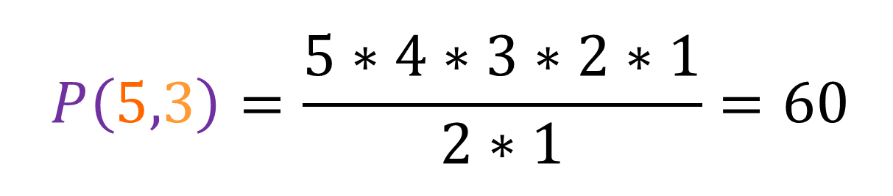
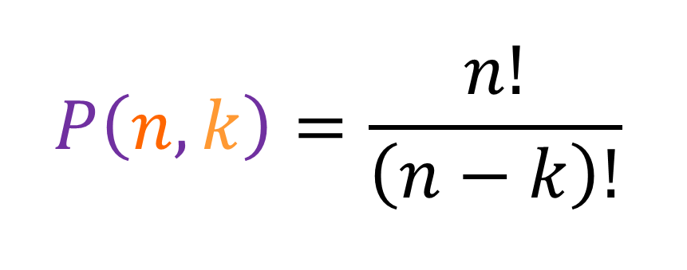

Suppose there are five letters and five boxes:
If I want to put one letter in each box, then for the first box I would choose one of the five letters: A, B, C, D or E, and if I chose letter B for the first box, then in the second box I can put A, C, D or E. In other words, there are five different possible ways I can fill out the first box, because I can choose any of the five letters, and then for the second box, there would be four different possibilities because I would have to choose from the four remaining letters. When filling just the first box, these are the five posssible outcomes:
When filling the first two boxes, there are (5 * 4 =) 20 possible ways of doing so (five possibilities for the first one and for each of the first five possibilities, there are four possibilities for the second one):
Similarly, there are (5 * 4 * 3 =) 60 possible ways I can fill out the first three boxes, and there are (5 * 4 * 3 * 2 * 1 =) 120 different ways I can fill out all the five boxes. This is a good way to introduce permutations. Permutations is the number of all the possible ways you can arrange a number of items. We will use n as the total number of items available, and we will use k as the number of items you selected from n. Like in the above example, if there were five letters in total and you wanted to find the number of ways you can arrange two letters, then n would be equal to 5, k would be equal to 2 and there would be 20 permutations. There are a number of notations used for permutations:
Here are some examples using the first notation:
In the last example, instead of writing [5 * 4 * 3 * 2 * 1], we can just write 5!. This is known as five factorial. The factorial of any positive integer, which we will call a, is equal to the product of all positive integer less than or equal to a. For example, 3! is [3 * 2 * 1], or 6. If you had n number of items, then the number of ways to arrange them would be n!. Now suppose you have six unique cards, how many groups of three and groups of two can you make, well:
Now that it is clear how permutations work, lets figure out the formula for it. In the above example, we had six cards, we already know that there are [6 * 5 * 4 * 3 * 2 * 1] or 6! ways of arranging all the cards, but if we want to make groups of two, then we are not concerned about the "[4 * 3 * 2 * 1]" part of 6!. In other words, we can write P(6,2) as [6!/(6 - 2)!], since this will give us [6 * 5] by cancelling out the "[4 * 3 * 2 * 1]" part of 6!. The two equations shown above can be written as:
Similarly, if we have five letters,then there are 5! ways of arranging it, but suppose instead of arranging all five letters, we want to make a group of three, then in order to find the number of ways we can have a group of three, we would only be concerned about the "[5 * 4 * 3]" part of 5!, while the "[2 * 1]" part is not important. The number of arrangements we can make in groups of three if we had five letters (P(5,3)) can be written as [5!/(5 - 3)!], since this will give us [5 * 4 * 3] by cancelling out the "[2 * 1]" part of 5!:
We can use this logic to deduce the formula of permutations:
If we need to arrange n number of unique coins, then the n! is there in the equation to tell us the total number of ways we can arrange all the n coins, but if we only to find the number of ways we can arrange them in a group of k, then the [(n - k)!] is there to cancel out the part which is not needed. To better understand this formula, I would recommend writing down your own examples, with your own values of n and k.